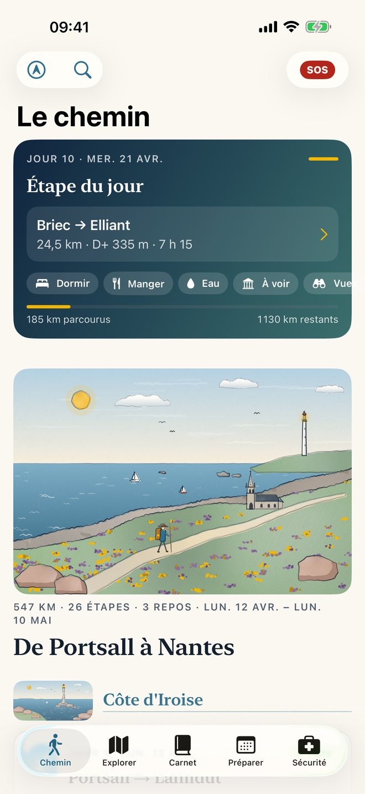
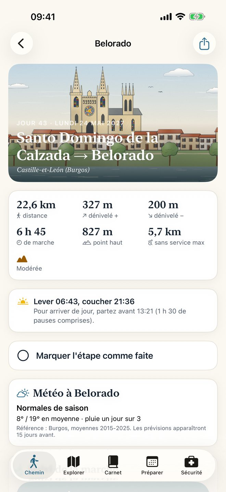
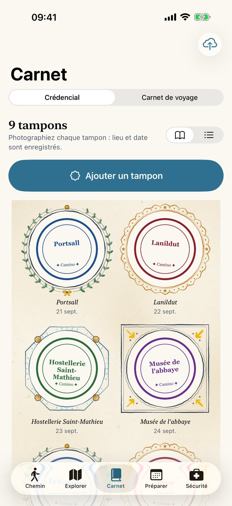
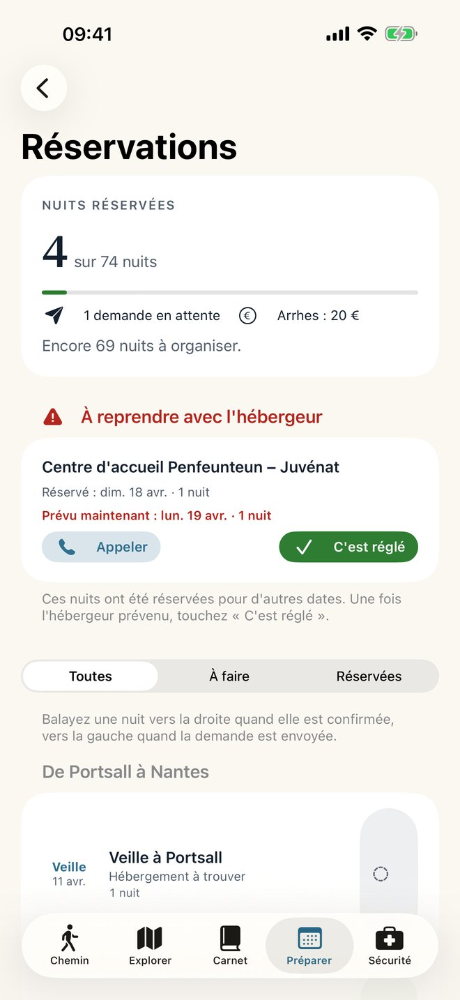
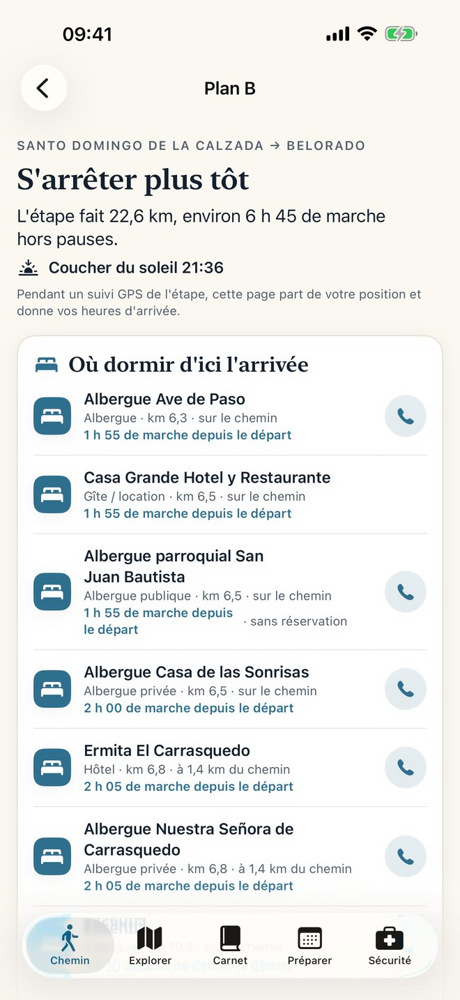
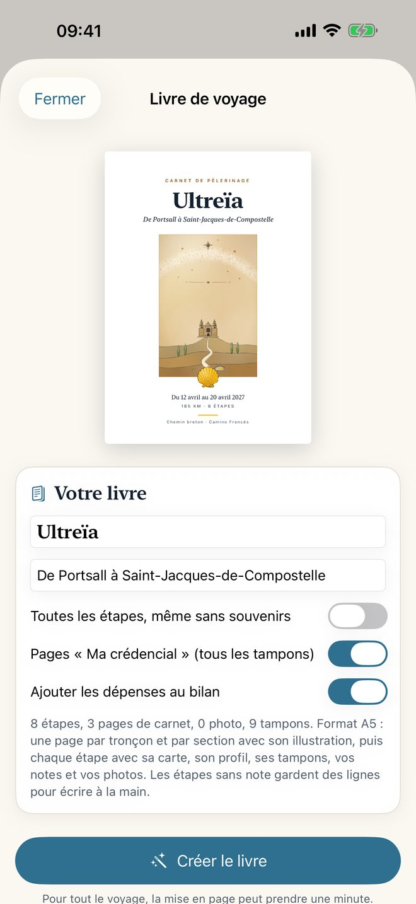

1 315 kilomètres à pied, de Portsall, dans le Finistère, jusqu'à Saint-Jacques-de-Compostelle : le chemin breton jusqu'à Nantes, une journée de train jusqu'à Saint-Jean-Pied-de-Port, puis le Camino Francés. 64 étapes, 73 jours avec les repos. L'app accompagne le voyage de la préparation à l'arrivée, et l'essentiel fonctionne sans réseau sur le chemin.






Le chemin
- Le chemin breton, de Portsall à Nantes : 547 km en 26 étapes, par la côte d'Iroise, la voie de la Pointe Saint-Mathieu et, plus loin, le canal de Nantes à Brest.
- Une journée de transfert en train, de Nantes à Saint-Jean-Pied-de-Port.
- Le Camino Francés, de Saint-Jean-Pied-de-Port à Santiago : 768 km en 38 étapes, avec la variante d'hiver par Valcarlos.
- Départ proposé le 12 avril 2027, Année sainte à Compostelle. La date se change, et le calendrier suit.
Chaque étape
- Les chiffres : distance, dénivelé, durée (4 km/h, plus une heure par 300 m de montée), difficulté et profil altimétrique.
- Le terrain : points forts, vigilance, marées, ravitaillement, points d'eau, transports, et où faire tamponner la crédencial.
- Où dormir : un hébergement principal et une alternative, chacun avec sa source. Ce qui n'a pas pu être confirmé est signalé « À vérifier », jamais inventé.
- La météo : prévisions à 15 jours, sinon les normales de saison. Le lever et le coucher du soleil, et l'heure de départ conseillée pour arriver de jour.
Préparer
- Dans les deux sens : de Portsall à Santiago, ou de Santiago à Portsall (le Camino à rebours, le train jusqu'à Nantes, puis le chemin breton). Étapes, durées, hébergements et calendrier suivent le sens choisi.
- Le planning : date de départ, jours de repos, voyage en plusieurs périodes, étape coupée en deux jours.
- Les alertes selon vos dates : route Napoléon interdite l'hiver, chaleur sur la Meseta, San Fermín, Année sainte.
- Les réservations : où en est chaque nuit, message de demande prêt en français ou en espagnol selon le pays, à envoyer par e-mail, SMS ou WhatsApp, prix convenu, arrhes. Si un changement de calendrier décale une nuit confirmée, l'app vous prévient et liste les hébergeurs à prévenir.
- Le budget estimé, puis les dépenses réelles.
- Un lexique espagnol et galicien, avec la prononciation.
Marcher
- Cartes IGN : Plan IGN et photos aériennes en France, cartes de l'Institut géographique national espagnol en Espagne, à télécharger étape par étape pour marcher hors ligne. Une carte neutre reste toujours disponible.
- Suivi GPS de la trace réellement marchée, écran verrouillé compris (Live Activity), avec une alerte si vous quittez le tracé.
- Plan B : besoin de vous arrêter plus tôt ? Les hébergements entre vous et l'arrivée, même sans réseau, les transports, le coucher du soleil et une alerte si vous risquez d'arriver à la nuit tombante. L'étape se coupe en deux jours ou se rattrape le lendemain, et l'app vous rappelle l'hébergeur du soir à prévenir.
- Explorer : dormir, manger, à voir, points de vue, courses, eau, santé, services, le long de l'étape, à l'arrivée ou autour de vous, avec Plans d'Apple, OpenStreetMap et Wikipédia. Les lieux que vous gardez vont dans « Mes lieux ».
- Widget « Étape du jour » et app Apple Watch.
Se souvenir
- La crédencial : chaque tampon photographié, et le rappel des deux tampons par jour sur les 100 derniers kilomètres.
- Le carnet : notes et photos à chaque étape.
- Le livre de voyage : un PDF au format A5 avec les cartes, les profils, les tampons, vos notes et vos photos, à imprimer.
- La sauvegarde, faite toute seule dans le dossier de votre choix (iCloud Drive conseillé), et sa restauration.
En cas de besoin
Le 112, les numéros utiles, et la fiche « Mes infos » : contact d'urgence, groupe sanguin, allergies, traitements, CEAM, assurance. « Mes infos » se consulte hors ligne.
Sans compte, sans publicité
Rien à créer, aucun achat dans l'app, aucune donnée collectée. Vos notes, photos, tampons, traces et réservations restent sur votre iPhone (et dans la sauvegarde que vous choisissez). L'application est en français. Détails dans la politique de confidentialité.
Sources
Tracés et lieux : © contributeurs OpenStreetMap (ODbL). Cartes : © IGN (Licence Ouverte Etalab 2.0) et © Instituto Geográfico Nacional de España (CC BY 4.0). Altitudes : IGN en France, EU-DEM (via OpenTopoData) en Espagne. Météo : Open-Meteo.com (CC BY 4.0), normales de saison d'après les réanalyses ERA5. Articles et photos : Wikipédia (CC BY-SA). Carte neutre : Natural Earth. Recherche en ligne : Plans d'Apple. Hébergements : chacun avec sa source, visible sur sa fiche.